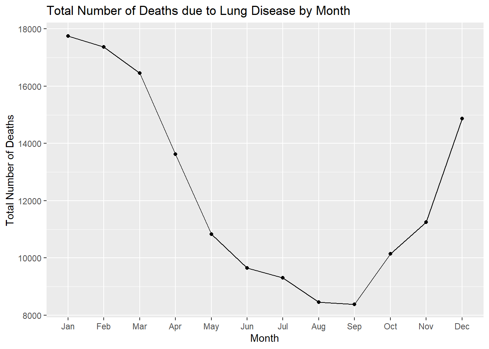

Hello! In this post, I will be working with a data set from the UKLungDeaths data set that is built-in with R. The dataset I am using is ldeaths which contains the number of monthly deaths from bronchitis, emphysema, and asthma of both men and women in the UK between the years of 1974-1979.
ldeaths contains the number of deaths in the UK over 72 months.
## Jan Feb Mar Apr May Jun Jul Aug Sep Oct Nov Dec
## 1974 3035 2552 2704 2554 2014 1655 1721 1524 1596 2074 2199 2512
## 1975 2933 2889 2938 2497 1870 1726 1607 1545 1396 1787 2076 2837
## 1976 2787 3891 3179 2011 1636 1580 1489 1300 1356 1653 2013 2823
## 1977 3102 2294 2385 2444 1748 1554 1498 1361 1346 1564 1640 2293
## 1978 2815 3137 2679 1969 1870 1633 1529 1366 1357 1570 1535 2491
## 1979 3084 2605 2573 2143 1693 1504 1461 1354 1333 1492 1781 1915First, I will be loading the tidyverse package to analyze the data.
library(tidyverse)## -- Attaching packages --------------------------------------- tidyverse 1.3.1 --## v ggplot2 3.3.5 v purrr 0.3.4
## v tibble 3.1.6 v dplyr 1.0.7
## v tidyr 1.1.3 v stringr 1.4.0
## v readr 2.1.1 v forcats 0.5.1## -- Conflicts ------------------------------------------ tidyverse_conflicts() --
## x dplyr::filter() masks stats::filter()
## x dplyr::lag() masks stats::lag()Next, I will be plotting the number of deaths over time.
From the graph, you can see that there is a peak in 1976 of the highest number of deaths due to lung disease. The highest number of deaths in this data set is:
max(ldeaths)## [1] 3891Not only did 1976 have the highest number of deaths, it also had the lowest number of deaths due to lung disease. The lowest number of deaths in this data set is:
min(ldeaths)## [1] 1300## [1] 148077Next, I am converting

## # A tibble: 12 x 2
## month total
## <chr> <dbl>
## 1 Apr 13618
## 2 Aug 8450
## 3 Dec 14871
## 4 Feb 17368
## 5 Jan 17756
## 6 Jul 9305
## 7 Jun 9652
## 8 Mar 16458
## 9 May 10831
## 10 Nov 11244
## 11 Oct 10140
## 12 Sep 8384